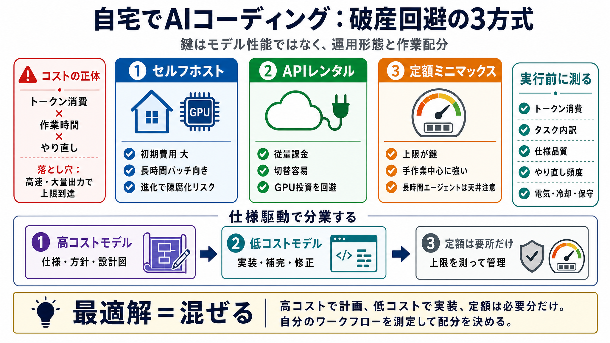

新闻雷达— AI·安全·经济 - 黑粉科技· 官网
实时追踪全球动态，AI、网络安全、经济、科技新闻，每30 分钟自动采集.

自宅でAIコーディングを続ける鍵は、「モデル性能」ではなく「運用形態」と「作業の内訳」でコスト構造を設計することです。
方式は 3つ：セルフホスト / APIレンタル / 定額ミニマックス。その 混ぜ方 が最適解になります。
AIが速く大量に出力すると、トークン（文字数等に換算される単位）が増え、プラン上限に到達しやすくなります。
自宅のAIコーディングは、(i) セルフホスト、(ii) APIレンタル、(iii) 定額ミニマックス、のどれを軸にするかでコストの発生点が変わります。
セルフホストは初期費用が高く、家庭で現実的に動かせるオープンモデルは最先端より弱いので、「継続稼働できる人」でないと得になりにくいです。
APIレンタル（オープンモデル）は、多くの人にとってリスクが低くなりやすいです。GPU投資を避け、モデル/構成を柔軟に変えられるからです。
定額プランは「お得感」が出やすい一方、メータ制でトークン消費が速い使い方だと天井に当たりやすいです。
要点：人が手を動かしながら進める作業には強いが、「エンジンとして長時間回す」には限界がある。
高コストモデルは“設計図”、低コストモデルは“埋める作業”。この分業が、トークンと費用のムダを減らします。
仕様駆動開発（spec driven development）では、必要な推論を圧縮するために「計画」と「実装」を分離して任せます。
日本語：仕様駆動開発＝“最初に仕様を固める”開発スタイル。
提案としては、「20人のエンジニアが1か月で出す成果に近づける」ような構築を、月およそ$1000程度で可能性がある、とされています。
この試算は一般化しにくいので、後述の通り自分のトークン消費を計測して検証が必要です。
結論は「概ね妥当」でも、前提が崩れると見積もりが壊れます。実行前に、トークン消費とタスク内訳を測って分業が成立するか確認しましょう。
最適解は単一方式ではなく「使い分け」です。高コストで計画し、低コストで実装し、定額は上限管理のために必要分だけ確保する—これが破綻しにくい戦略です。
次の一歩：自分のワークフローを分解し、(i) 仕様フェーズの高コスト割合、(ii) 実装フェーズの低コスト割合、(iii) 長時間自動化のトークン影響 を測定して設計を固める。
实时追踪全球动态，AI、网络安全、经济、科技新闻，每30 分钟自动采集.